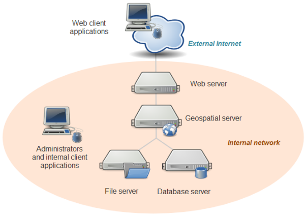

Winter 2017 | Geography 371 | Geovisualization: Web Mapping
Instructor: Bo Zhao | TA: Andy Wilson | Location: 235 Wilkinson | Time: Wednesday 2-2:50pm
Learning Objectives
It can take several different physical machines to create, serve, and use a web map. These are often depicted in diagrams as separate levels, or tiers of architecture. In this course, you'll likely use just one machine to play all these roles; however, it's important to understand how the tiers fit together.

System architecture for web mapping.
- A line extends from the bottom of this cloud into a wide oval diagram with the label: Internal network.
- The line leads to the drawing of a Web server and then, below the Web server, to a Geospatial server.
- The line then branches to drawings of a file server (left) and a database server (right).
- To the left (within the Internal network oval) is another computer drawing with the label: Administrators and internal client applications. Desktop workstations that are used by administrators and internal client applications. These machines will also be used to prepare data, author maps, and sometimes administer the other machines.
In some cases, your web map may be designed solely for the use of people within your organization and may never see the open web. In this scenario, client applications may also reside on these desktop workstation machines. a database and/or file server holding all of your GIS data. This machine might be equipped with redundant storage mechanisms and regular backup scripts that prevent the loss of data.
In this course, you'll be using folders of shapefiles for some of the exercises. If you had decided to use a database like PostgreSQL or MongoDB, it would also go on this tier.
A geospatial web services server that has specialized software and processing power for drawing maps, responding to feature queries, and performing GIS analysis operations. In this course, you will use GeoServer to host your web services.
A web server that acts as a web entry point into your organization's network. This is also called a proxy server. It is protected by firewalls that shield malicious traffic into your internal network. It's also a place where you can put web application code (such as HTML and JavaScript files) for your web maps.
In this course, you will just be using GeoServer on your local machine; therefore, you will not install separate web server software. GeoServer comes with an embedded “servlet” called Jetty that gives you a simple endpoint to your web services that you can locally access for testing. In a more formal setup where you wanted to reveal your GeoServer web services to the world, you would have a web server such as Apache that would forward requests to GeoServer.
Many client applications that use the web map. These can be apps that run on your desktop workstation or they could be mobile apps. The clients may be based within your network, or you may allow them to come from outside your network. All clients must be able to make web requests through HTTP, and any client coming from outside your network must have an Internet connection.
In this course, you can use any modern web browser to test your apps and services. You can also use a mobile browser, such as Safari on the iPhone, to test the apps that you place on your personal web space.
Again, when developing and testing a web map, you can certainly use a single physical machine to play all these roles. This is a common practice that keeps things simple and more economic. When you work for a “real world” company with its own network and you are ready to deploy your web map, you will move your tested services and applications into a formal “production” environment where you have individual enterprise-grade machines for each role, as described above.
Building and using web maps is different from working with a desktop GIS for a variety of reasons:
These considerations can sometimes take people by surprise. For example, if you've only used ArcMap or QGIS in the past, you may not be accustomed to thinking about broadband speeds or sharing the machine with other people.
By far, the biggest challenge for new web mappers is understanding the amount of data that is displayed in their maps and how to get all that information drawn on the screen of a web user in sub-second speeds. Many people who have worked with desktop GIS packages are accustomed to adding dozens (or even hundreds) of layers to the map and switching them on and off as needed. Your powerful desktop machine may be able to handle the drawing of this kind of map; however, performance will be unacceptably slow if you try to move the map directly to the web. The server requires precious time to iterate through all those layers, retrieve the data, draw it, and send the image back to the client.
To address this problem, most web maps break apart the layers into groups that are handled very differently. Layers whose sole purpose are to provide geographic context are grouped together and brought into the map as a single tiled basemap. In contrast, thematic layers (the layers that are the focus of the map) are brought in as one or more separate web services and placed on top of the basemap. You might additionally decide to include a set of interactive elements such as popups, charts, analysis tools, and so forth.
Let's take a closer look at these three things--basemaps, thematic layers, and interactive elements--to understand how each is created and displayed.
A basemap provides geographic context for your map. In other words, it is usually not the main reason people look at your map, but your map would be difficult to interpret without it. The most common basemaps you've used online are vector road maps and remotely sensed imagery.
Although a basemap may consist of many sublayers (such as roads, lakes, buildings, and so forth), these are often fused together into a rasterized set of tiled images and treated as a single layer in your web map. These tiled maps consist of often thousands or millions of predrawn images that are saved on the server and passed out to web browsers as people pan around the map. In the upcoming lectures on GeoServer will explain tiled maps in greater depth and give you a chance to make your own.
In the past couple of years, it has become fashionable in some applications for the server to send the basemap as chunks of vector coordinates, sometimes known as "vector tiles." Displaying the basemap as vectors instead of a rasterized map allows for more flexibility in visualization, such as being able to rotate the map while the labels stay right-side-up. You can see a vector basemap in action if you look at the Google Maps app on a smartphone.
Sometimes two tiled layers will work together to form a basemap. For example, you may have a tiled layer with aerial imagery and a second tiled layer with a vector road overlay that has been designed to go on top of the imagery. (In Google Maps, this appears when you check the Labels item). Keeping these two tilesets separate takes less disk space and makes it easier to update the imagery.
Thematic layers (also known as business or operational layers) go on top of the basemap. They're the reason people are coming to visit your map. If placed on the basemap, they might not be of interest to everybody, but when placed on your focused web map, they are the main layer of interest. If your map is titled “Farmers markets in Philadelphia,” then farmers markets are your thematic layer. If your map is titled “Migration patterns of North American birds,” then the migration patterns are your thematic layer.
Like basemaps, thematic layers are sometimes displayed with tiles; however, this may not always be possible due to the rapidly changing nature of some data. For example, if you need to display the real time positions of police vans, you cannot rely on predrawn tiles and must use some other way to draw the data. There are various web services such as Web Map Service (WMS , it will be covered in a lecture in Week 04) that are designed to draw maps on the fly in this way. You can use these for your thematic layers. Another option is to query the server for all the data and use the browser to draw it. This approach lends itself well to interactive elements such as popups and is described in Lesson 6.
Thematic layers work together with basemap layers to form an effective web map. Interestingly, the thematic layer is not always the top one. Esri cartographer Charlie Frye describes a “map sandwich” approach, wherein a thematic layer (which could be tiled or not) is placed in between two tiled basemap layers that give geographic context.
Your map may include several thematic layers that you allow users to toggle on and off. To accomplish this, you can use a single web service with multiple sublayers, or multiple web services that each contain a single layer. However, to keep your app usable and relatively fast-performing, you should avoid including many thematic layers in your web map.
Web maps are often equipped with interactive elements that can help you learn more about the layers in the map. These can be informational popups that appear when you click a feature, charts and graphs that are drawn in a separate part of the page, slider bars that adjust the time slice of data displayed in the map, and so forth. Some web maps allow you to edit GIS data in real time, or submit a geoprocessing job to the server and see the response drawn on the screen. Others allow you to type a series of stops and view driving directions between each.
These elements make the map come alive. The key to making an effective web map is to include the interactive elements that are most useful to your audience, without overwhelming them with options or making the tasks too complicated. Even a little bit of housekeeping, such as including user-friendly field aliases in your popups, can go a long way toward making your map approachable and useful.
Interactive elements are the part of your web map that require the most custom programming. The amount of interactivity you have the freedom to add may be strongly correlated with the amount of JavaScript programming that you know how to do. Open web mapping APIs such as OpenLayers and Leaflet provide convenient methods for doing some of the most common things, such as opening a popup.